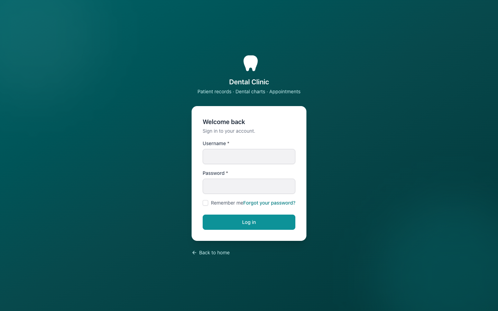

Open the clinic's app URL on a tablet or desktop browser. The branded login screen is the entry point for all staff.
Step 1
Enter your staff username (e.g. admin, dentist, assistant, receptionist).
Step 2
Enter your password.
Step 3
Tick Remember me on clinic tablets to stay signed in between shifts.
Step 4
Click Log in to open the dashboard.
Note
Development accounts use the password password. In production, every staff member gets a personal account from the Administrator.
